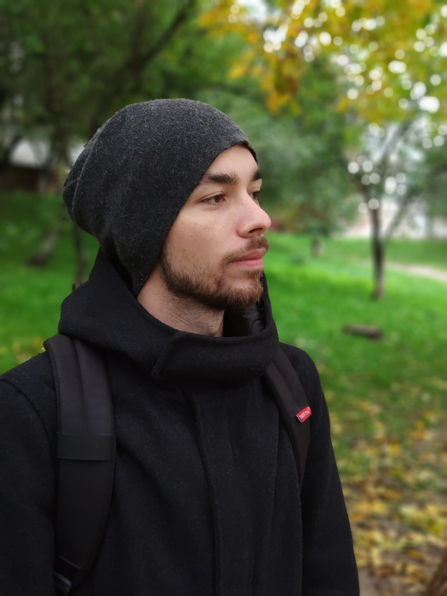

Butnik-Siverskyi Maksym


Date of Birth: 29.11.1996 (24 y.o.)
City: Kyiv
E-mail: maxbsiv@gmail.com
Mob. number: (066) 021-21-29
Experience
System Administrator
From 27.11.2017 to 17.03.2020 (2 years 5 months)
«Evoplay», Kyiv (IT-Support)
My duties included:
- Preparation and delivery of equipment for new employees
- Configuring Windows/Unix operating systems
- Search and solution of software and hardware problems
- Configuring Mail Encryption (gpg suite, gpg4win, enigmail)
- Operating system encryption
- Working with Active Directory
- Working with structured cabling at a basic level
Held a CSGO tournament within the company (raising and maintaining a dedicated server)
Education
«KROK»
Finance, banking and insurance, Kyiv
Master, from 09.2017 to 02.2019 (1 year 6 months)
Additional education
- English courses, from 2007 to 2011 (4 years)
Knowledge of languages
- Ukrainian - native
- Russian - native
- English – B2
Additional Information
Responsible, doing work as for myself, sociable. I have my own point of view, I take into account someone else's opinion, I am not against compromises if they are justified. I have a positive attitude to well-reasoned complaints, it helps to work on mistakes.